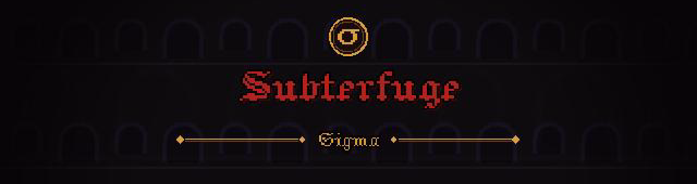
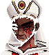

Nivel I · de bajada
Ocho salas del Pabellón N.º 7 a la Escalera de los Ciegos: sierras, membranas, el techo que late, la Vestal y el Cegado. Cada sala enseña una cosa y se pasa por sus pasos.


Mano del Sacramento, Sala N.º 7. Toda la vida cosiendo a ciegas, con la máscara puesta, sin saber qué tenía debajo del bisturí. Ahora baja sin turno y con la cara descubierta, y en los Pasillos ya le han puesto nombre.
Las paredes se mueven y la carne no llega. Bajas a ver por qué.
El diseño de los personajes es el de Mariana Echeverri, pintado a mano. Las figuras que se mueven en el juego todavía son provisionales, hechas en código para poder jugar, hasta que lleguen sus sprites.
Sigma todavía no tiene controles táctiles. En el celular puedes jugar el teaser de Subterfuge, que sí los tiene.
Con teclado o mando. La primera carga son unos 50 MB. La partida se guarda en este navegador.
Los cuerpos de los Mil son las paredes, los ductos y las salas del templo, y llevan milenios quietos. Ahora se mueven: las capas se juntan, la carne deja de llegar a los pabellones y una Mano del Sacramento baja sin turno a ver por qué. Ese descenso es la demo: el Nivel I y los Pasillos de Preparación, hasta la puerta de las Salas de Sacramento.
Ocho salas del Pabellón N.º 7 a la Escalera de los Ciegos: sierras, membranas, el techo que late, la Vestal y el Cegado. Cada sala enseña una cosa y se pasa por sus pasos.
El Registro de Diezmos, la Escribanía, el Archivo y el pasillo que se cierra a la espalda. Los tres registros de Génesis abren el ala sellada; los rayos de Génesis avisan antes de quemar.
Tras la puerta, el Primer Ojo y la primera visión. Mirar abre puentes de carne que solo existen mientras se mira; desde ahí, los objetivos cambian de color.
El primer guardián, en la Nave del Libro: injertos en arco, sellos que se devuelven y un báculo que se para. Al caer suelta la Injertadora y la nave se abre al Atrio.
Golpe cargado con Fervor, parry, contragolpe y ejecución. Mirar con el ojo abre lo que otros no ven. El Pulmón Vacío da el doble salto (en la campaña, Nivel III; sigue en el Atrio de demostración); el Tendón del Mil, el dash. Rezar guarda; morir deja una deuda de carne.
La ley de la Mano que mira, los laboratorios sellados de Génesis Vestal y el nombre que los Pasillos repiten en voz baja: el Último Sacramento. Cada cual lo cuenta a su manera, y ninguno lo cuenta todo.
Seis capas. En Sigma no se abren con llaves: el templo se asienta y dos capas se juntan. El plano del Portal cuenta las juntas una a una.
El Portal de la Diócesis lleva el expediente del asentamiento: los avisos, el plano que se cierra y los nombres que constan. Leer el expediente.